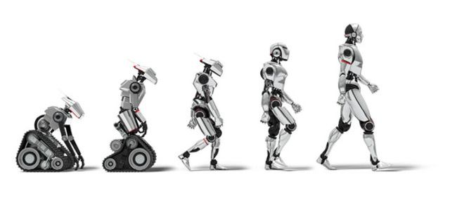
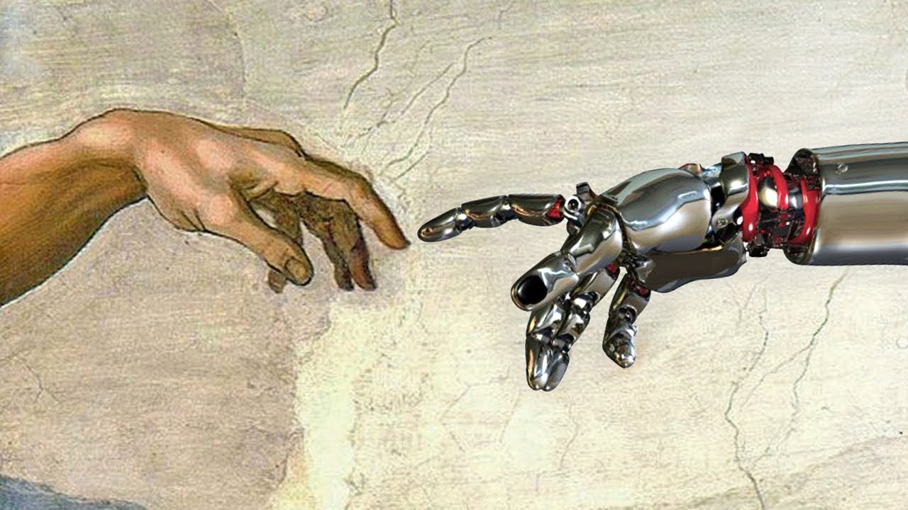

Se podría definir robótica como una ciencia que aglutina varias disciplinas o ramas
de la tecnología con el objetivo de diseñar máquinas programadas para realizar tareas
de forma automática o para simular el comportamiento humano o animal.
A grandes
rasgos, y sin entrar en mucho detalle, un robot se podría ver como un ordenador con
capacidad de movimiento.
Además de desarrollar el pensamiento computacional, los robots educativos favorecen el desarrollo de otras habilidades cognitivas entre niños y jóvenes: Aprender de los errores:
link: https://www.youtube.com/watch?v=WlQNLSKwM5Q
El origen de la robótica está conectado con el origen del hombre y su afán por idear herramientas para facilitar las tareas diarias. Dentro del mundo tecnológico, la robótica consiste en el diseño, construcción, manipulación y programación de robots. Entre el siglo XVII y el XVIII hubo invenciones mecanizadas como las del ingeniero francés Jacques de Vauncansos: llevó a cabo la construcción de unos muñecos de tamaño humano (autómatas) que tocaban instrumentos. En la Revolución Industrial se crearon máquinas robotizadas, como la hiladora mecánica de Crompton (1779) y el telar de Jacquard (1801). También podemos remontarnos a la época de los antiguos egipcios: Ellos idearon brazos mecánicos que unieron a las estatuas de los Dioses. Continuando la línea de la veneración, los griegos construyeron estatuas con movimiento funcionando mediante sistemas hidráulicos para impresionar a los seguidores de los templos. Probablemente el origen se encuentra en la necesidad imperiosa de buscar alternativas para facilitar y optimizar cualquier tarea productiva. En la historia de la humanidad siempre ha estado presente la invención como herramienta indispensable para el desarrollo personal, social y tecnológico. Ya en la prehistoria se inventaron utensilios rudimentarios (pero efectivos) para facilitar arduas tareas. Así que desde ese mismo instante hay constancia de esa faceta resolutiva que va implícita en el ser humano.
Los robots tal y como se conciben hoy en día no son precisamente para tratar de asemejarse a los seres humanos, si no para apoyar en actividades diarias cubrir necesidades con la mayor óptica posible.
La historia de la robótica va unida a la construcción de “máquinas” que trataban de materializar el deseo del ser humano de crear seres a su semejanza y que lo descarguen del trabajo. Los antiguos egipcios unieron brazos mecánicos a las estatuas de sus dioses;
los griegos construyeron estatuas que operaban con sistemas hidráulicos, los cuales eran utilizados para fascinar a los adoradores de los templos. Durante los siglos XVII y XVIII en Europa fueron construidos muñecos mecánicos muy ingeniosos que tenían algunas características de robots.